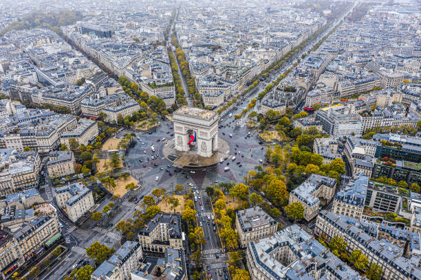
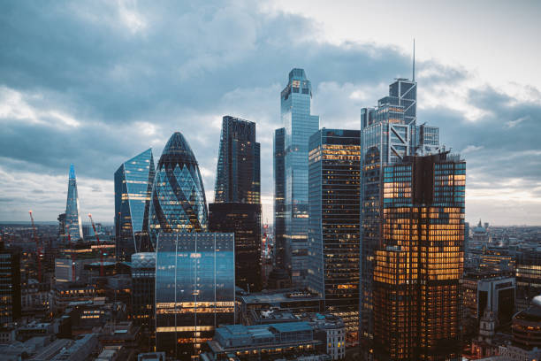
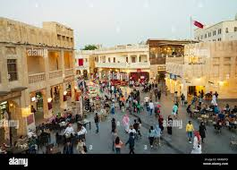
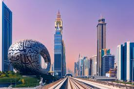
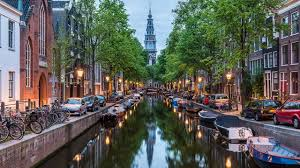

MY FAVORITE PHOTOS
 Nairobi
Nairobi New York
New York Monaco
Monaco Tokyo
Tokyo Eiffel Tower
Eiffel Tower
Paris
London Lyon
Lyon
Doha
Dubai Mombasa
Mombasa
Amsterdam Rio de Janeiro
Rio de Janeiro
Photography is a way of feeling, touching, and of loving.
This website is a personal photography portfolio created to celebrate urban landscapes that capture the rhythm and energy of city life, the striking modern architecture found in cities such as Nairobi, Monaco, Paris, and others, and the rich diversity of people and culture that make each city unique. Through these images, I aim to highlight not only the visual beauty of urban spaces but also the stories, moments, and emotions that unfold within them. Every photograph tells a story long after memories fade, preserving fleeting experiences and the essence of city life for years to come.
NairobiNew YorkMonacoTokyoEiffel Tower
Paris
LondonLyon
Doha
DubaiMombasa
AmsterdamRio de Janeiro
Annan Rapando is a student with a growing passion for photography, particularly urban and city landscapes. This website was created as a space to showcase a selection of favorite city photographs and to explore visual storytelling through images. Inspired by architecture, movement, and everyday life in cities, Annan uses photography to capture moments that reflect both the energy and quiet beauty of urban environments. The site represents an ongoing creative journey and a love for preserving moments through photography.